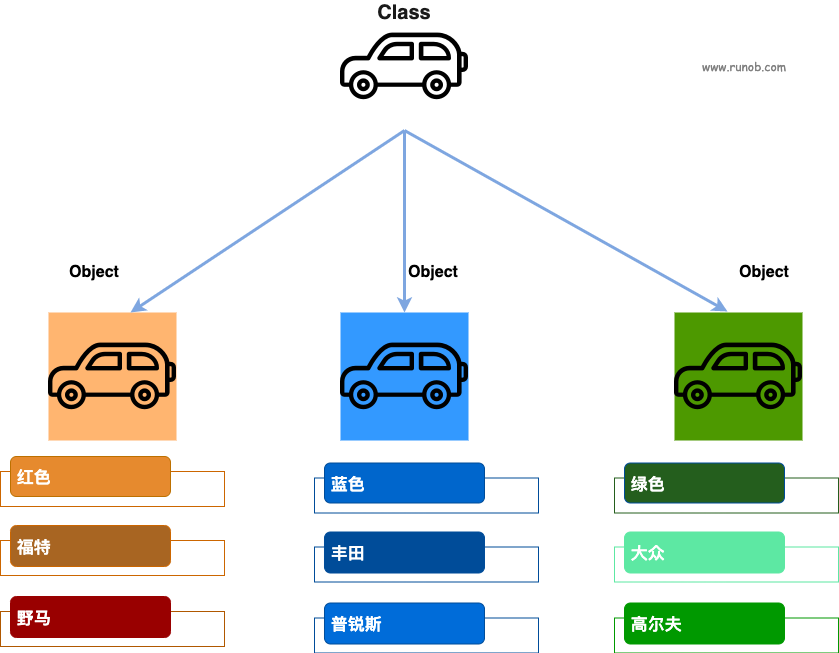
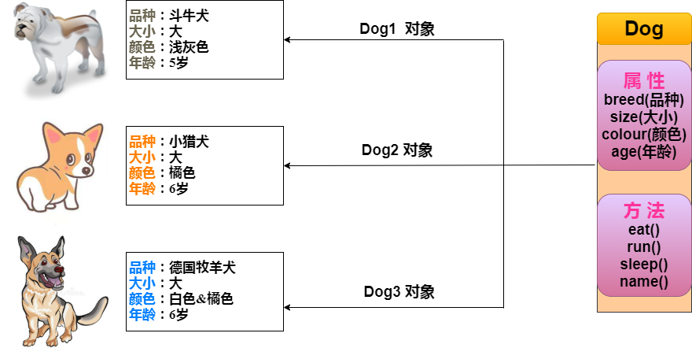

Objetos y clases de Java
Java, como lenguaje de programación orientado a objetos, admite los siguientes conceptos básicos:
1、Clase (Class)：
- Define el modelo (blueprint) de un objeto, incluyendo atributos y métodos.
- Ejemplo:
public class Car { ... }
2. Objeto (Object)：
- Instancia de una clase, que tiene estado y comportamiento.
- Ejemplo:
Car myCar = new Car();
3. Herencia (Inheritance)：
- Una clase puede heredar atributos y métodos de otra clase.
- Ejemplo:
public class Dog extends Animal { ... }
4. Encapsulamiento (Encapsulation)：
- Privatiza el estado (campos) del objeto y accede a él mediante métodos públicos.
- Ejemplo:
private String name; public String getName() { return name; }
5. Polimorfismo (Polymorphism)：
- Un objeto puede manifestarse en múltiples formas, principalmente mediante la sobrecarga de métodos y la sobreescritura de métodos.
- Ejemplo:
- Sobrecarga de métodos:
public int add(int a, int b) { ... }和public double add(double a, double b) { ... } - Sobreescritura de métodos:
@Override public void makeSound() { System.out.println("Meow"); }
- Sobrecarga de métodos:
6. Abstracción (Abstraction)：
- Usa clases abstractas e interfaces para definir métodos que deben implementarse, sin proporcionar una implementación concreta.
- Ejemplo:
- Clase abstracta:
public abstract class Shape { abstract void draw(); } - Interfaz:
public interface Animal { void eat(); }
- Clase abstracta:
7. Interfaz (Interface)：
- Define métodos que la clase debe implementar y admite herencia múltiple.
- Ejemplo:
public interface Drivable { void drive(); }
8. Método (Method)：
- Define el comportamiento de una clase; es una función contenida en la clase.
- Ejemplo:
public void displayInfo() { System.out.println("Info"); }
9. Sobrecarga de métodos (Method Overloading)：
- En la misma clase puede haber varios métodos con el mismo nombre, pero con diferentes parámetros.
- Ejemplo:
public class MathUtils { public int add(int a, int b) { return a + b; } public double add(double a, double b) { return a + b; } }
En esta sección nos centramos en los conceptos de objeto y clase.
- Objeto: Un objeto es una instancia de una clase (un objeto no es buscar una novia), tiene estado y comportamiento. Por ejemplo, un perro es un objeto; su estado incluye: color, nombre, raza; su comportamiento incluye: mover la cola, ladrar, comer, etc.
- 类: Una clase es una plantilla que describe el comportamiento y el estado de un tipo de objetos.
En la siguiente figura,niño (boy)、niña (girl)为clase (class), y cada persona concreta es unobjeto (object) de esa clase：

En la siguiente figura,automóvil为clase (class), y cada automóvil concreto es unautomóvilde la claseobjeto (object), el objeto incluye el color, la marca, el nombre, etc. del automóvil.

Objetos en Java
Ahora profundicemos en qué es un objeto. Mira el mundo real que te rodea; verás que hay muchos objetos a tu alrededor: coches, perros, personas, etc. Todos estos objetos tienen su propio estado y comportamiento.
Tomemos como ejemplo un perro; sus estados son: nombre, raza, color; sus comportamientos son: ladrar, mover la cola y correr.
Comparando los objetos reales con los objetos de software, son muy similares entre sí.
Los objetos de software también tienen estado y comportamiento. El estado de un objeto de software son sus atributos, y el comportamiento se refleja a través de métodos.
En el desarrollo de software, los métodos operan sobre el cambio del estado interno del objeto, y la interacción entre objetos también se realiza mediante métodos.
Clases en Java
Una clase puede considerarse como una plantilla para crear objetos Java.

Creemos una clase sencilla como la de la figura anterior para entender la definición de una clase en Java:
Una clase puede contener los siguientes tipos de variables:
- Variables locales: Las variables definidas en métodos, constructores o bloques de sentencias se denominan variables locales. La declaración e inicialización de la variable se realizan en el método; cuando el método termina, la variable se destruye automáticamente.
- Variables miembro: Las variables miembro son variables definidas en la clase, fuera del cuerpo del método. Este tipo de variable se instancia al crear el objeto. Las variables miembro pueden ser accedidas por los métodos, los constructores y los bloques de sentencias de una clase específica.
- Variables de clase: Las variables de clase también se declaran en la clase, fuera del cuerpo del método, pero deben declararse como tipo static.
Una clase puede tener varios métodos; en el ejemplo anterior: eat(), run(), sleep() y name() son métodos de la clase Dog.
Métodos constructores
Cada clase tiene un método constructor. Si no se define explícitamente un constructor para la clase, el compilador de Java proporcionará un constructor predeterminado.
Al crear un objeto, se debe invocar al menos un método constructor. El nombre del constructor debe ser igual al de la clase; una clase puede tener varios constructores.
A continuación se muestra un ejemplo de constructor:
Creación de objetos
Los objetos se crean a partir de clases. En Java, se utiliza la palabra clave new para crear un nuevo objeto. La creación de un objeto requiere los siguientes tres pasos:
- Declaración: Declarar un objeto, incluyendo el nombre del objeto y el tipo del objeto.
- Instanciación: Usar la palabra clave new para crear un objeto.
- Inicialización: Al usar new para crear un objeto, se invoca el constructor para inicializar el objeto.
A continuación se muestra un ejemplo de creación de objetos:
Compile y ejecute el programa anterior; se imprimirá el siguiente resultado:
小狗的名字是 : tommy
Acceso a variables de instancia y métodos
A través del objeto creado se accede a las variables miembro y métodos miembro, como se muestra a continuación:
Declarar una variable de tipo Object solo permite acceder a los métodos y propiedades de la clase Object en tiempo de compilación; pero en tiempo de ejecución, se puede convertir a un tipo específico mediante una conversión de tipos forzada para acceder a los métodos y propiedades de ese tipo específico.
Ejemplo
El siguiente ejemplo muestra cómo acceder a variables de instancia y llamar a métodos miembro:
Código del archivo Puppy.java:
Compile y ejecute el programa anterior, se produce el siguiente resultado:
小狗的名字是 : tommy 小狗的年龄为 : 2 变量值 : 2
Reglas de declaración del archivo fuente
En la parte final de esta sección, aprenderemos las reglas de declaración del archivo fuente. Cuando se definen varias clases en un archivo fuente y además hay sentencias import y package, se debe prestar especial atención a estas reglas.
- En un archivo fuente solo puede haber una clase public
- Un archivo fuente puede tener varias clases no public
- El nombre del archivo fuente debe ser igual al nombre de la clase public. Por ejemplo: si el nombre de la clase public en el archivo fuente es Employee, entonces el archivo fuente debe llamarse Employee.java.
- Si una clase se define en un paquete, la sentencia package debe estar en la primera línea del archivo fuente.
- Si el archivo fuente contiene sentencias import, deben colocarse entre la sentencia package y la definición de la clase. Si no hay sentencia package, las sentencias import deben estar al principio del archivo fuente.
- Las sentencias import y package son válidas para todas las clases definidas en el archivo fuente. En el mismo archivo fuente, no se pueden declarar diferentes paquetes para diferentes clases.
Las clases tienen varios niveles de acceso, y también se dividen en diferentes tipos: clases abstractas, clases final, etc. Esto se presentará en el capítulo de control de acceso.
Además de los tipos mencionados anteriormente, Java tiene algunas clases especiales, como:Clases internas、Clases anónimas。
Paquetes en Java
Los paquetes se utilizan principalmente para clasificar clases e interfaces. Al desarrollar programas Java, es posible escribir cientos o miles de clases, por lo que es muy necesario clasificar las clases e interfaces.
Sentencia import
En Java, si se proporciona un nombre completamente calificado, que incluya el nombre del paquete y el nombre de la clase, el compilador de Java puede localizar fácilmente el código fuente o la clase. La sentencia import se utiliza para proporcionar una ruta razonable para que el compilador pueda encontrar una clase.
Por ejemplo, la siguiente línea de comandos le indicará al compilador que cargue todas las clases en la ruta java_installation/java/io.
import java.io.*;
Un ejemplo sencillo
En este ejemplo, creamos dos clases:Employee 和 EmployeeTest。
Primero abra el editor de código, pegue el siguiente código y guarde el archivo como:Employee.java。
La clase Employee tiene cuatro variables miembro: name, age, designation y salary. Esta clase declara explícitamente un método constructor con un solo parámetro.
Código del archivo Employee.java:
La ejecución de los programas Java comienza desde elmainmétodo; para poder ejecutar este programa, se debe incluir el método main y crear un objeto de instancia.
A continuación se muestra la clase EmployeeTest, que crea dos instancias de la clase Employee y llama a los métodos para establecer los valores de las variables.
Guarde el siguiente código en el archivo EmployeeTest.java.
Código del archivo EmployeeTest.java:
Compile estos dos archivos y ejecute la clase EmployeeTest; podrá ver el siguiente resultado:
$ javac EmployeeTest.java Employee.java $ java EmployeeTest 名字:RUNOOB1 年龄:26 职位:高级程序员 薪水:1000.0 名字:RUNOOB2 年龄:21 职位:菜鸟程序员 薪水:500.0Otras extensiones
stinkaroo
190***276@qq.com
Como Java exige que el nombre de la clase (la única clase public) y el nombre del archivo sean iguales, no es necesario declarar explícitamente la referencia a otras clases. Al compilar, el compilador buscará el archivo con el mismo nombre según el nombre de la clase.
stinkaroo
190***276@qq.com
LadyLeane
q-b***sn.com
La función de package es la misma que la de namespace en C++, y sirve para evitar conflictos entre clases con el mismo nombre. El compilador de Java, al compilar, genera directamente los archivos .class en el directorio correspondiente según la información especificada por package. Por ejemplo,package aaa.bbb.cccel compilador generará las distintas clases de ese archivo .java en./aaa/bbb/ccc/este directorio.
import se utiliza para simplificar el código de instanciación después de usar package. Supongamos./aaa/bbb/ccc/la clase A bajo ese paquete; si no hay import, instanciar la clase A sería:new aaa.bbb.ccc.A(), y después de usarimport aaa.bbb.ccc.Ase puede usar directamentenew A()es decir, el compilador hace coincidir y expandeaaa.bbb.ccc.esta cadena de caracteres.
LadyLeane
q-b***sn.com
Amituofo
253***7490@qq.com
Dirección de referencia
¿Por qué un archivo JAVA solo puede contener una clase public?
Los programas Java comienzan a ejecutarse desde el método main de una clase public (en realidad, el hilo main), al igual que los programas C comienzan desde la función main(). Solo puede haber una clase public para facilitar el cargador de clases. Una clase public solo puede definirse en un archivo cuyo nombre de archivo sea el nombre de la clase.
Cada unidad de compilación (archivo) solo tiene una clase public. Porque cada unidad de compilación solo puede tener una interfaz pública, representada por la clase public. Esa interfaz puede contener muchas clases con acceso de paquete según sea necesario. Si hay más de una clase public, el compilador reportará un error. Además, el nombre de la clase public debe ser el mismo que el nombre del archivo (distingue estrictamente mayúsculas y minúsculas). Por supuesto, una unidad de compilación también puede no tener ninguna clase public.
Amituofo
253***7490@qq.com
Dirección de referencia
pxn626
790***000@qq.com
Dirección de referencia
Diferencia entre variables miembro y variables de clase
Las variables modificadas por static se denominan variables estáticas; en esencia, son variables globales. Si un contenido es compartido por todos los objetos, entonces ese contenido debe modificarse con static; el contenido que no está modificado por static en realidad pertenece a la descripción específica del objeto.
Las variables de instancia de diferentes objetos se asignan en diferentes espacios de memoria. Si una variable miembro de la clase es una variable de clase, entonces esa variable de clase de todos los objetos se asigna a la misma ubicación de memoria; cambiar la variable de clase de un objeto afecta la variable de clase de otros objetos, es decir, los objetos comparten la variable de clase.
Diferencias entre variables miembro y variables de clase:
1. El ciclo de vida de las dos variables es diferente
Las variables miembro existen con la creación del objeto y se liberan con la recuperación del objeto.
Las variables estáticas existen con la carga de la clase y desaparecen con la desaparición de la clase.
2. La forma de llamada es diferente
Las variables miembro solo pueden ser llamadas por objetos.
Las variables estáticas pueden ser llamadas por objetos y también por el nombre de la clase.
3. El alias es diferente
Las variables miembro también se denominan variables de instancia.
Las variables estáticas también se denominan variables de clase.
4. La ubicación de almacenamiento de datos es diferente
Las variables miembro se almacenan en los objetos de la memoria heap, por lo que también se denominan datos específicos del objeto.
Los datos de las variables estáticas se almacenan en la zona estática de la zona de métodos (zona de datos compartidos), por lo que también se denominan datos compartidos del objeto.
La palabra clave static es un modificador que se utiliza para modificar miembros (variables miembro y funciones miembro).
Características:
1. Si se desea lograr que los datos comunes de los objetos sean compartidos por los objetos, se pueden modificar estos datos con static.
2. Los miembros modificados por static pueden ser llamados directamente por el nombre de la clase. Es decir, los miembros estáticos tienen una forma adicional de llamada: NombreClase.métodoEstático.
3. Lo estático se carga con la carga de la clase y existe antes que los objetos.
Desventajas:
1. Algunos datos son específicos de los objetos y no pueden modificarse con static. Porque de lo contrario, los datos específicos se convertirían en datos compartidos de los objetos. Esto causaría problemas en la descripción de las cosas. Por lo tanto, al definir static, se debe tener claro si estos datos son compartidos por los objetos.
2. Los métodos estáticos solo pueden acceder a miembros estáticos, no a miembros no estáticos.
Porque el método estático, al cargarse, existe antes que los objetos, por lo que no hay manera de acceder a los miembros del objeto.
3. En los métodos estáticos no se pueden usar las palabras clave this ni super.
Porque this representa al objeto, y cuando existe un miembro estático, es posible que no haya objetos, por lo que this no se puede usar.
¿Cuándo se deben definir miembros estáticos? O mejor dicho: al definir miembros, ¿es necesario que sean modificados por static?
Los miembros se dividen en dos tipos:
1. Variables miembro. (Cuando los datos son compartidos, se vuelven estáticas)
¿Los datos de esta variable miembro son iguales para todos los objetos?
Si es así, entonces la variable debe modificarse con static, porque son datos compartidos.
Si no es así, entonces se dice que son datos específicos del objeto y deben almacenarse en el objeto.
2. Funciones miembro. (Cuando el método no llama a datos específicos, se define como estático)
¿Cómo determinar si una función miembro necesita ser modificada con static?
Solo hay que considerar si la función accede a datos específicos del objeto:
Si accede a datos específicos, el método no puede modificarse con static.
Si no accede a datos específicos, entonces este método debe modificarse con static.
Diferencias entre variables miembro y variables estáticas:
1. Las variables miembro pertenecen al objeto, por lo que también se denominan variables de instancia.
Las variables estáticas pertenecen a la clase, por lo que también se denominan variables de clase.
2. Las variables miembro existen en la memoria heap.
Las variables estáticas existen en la zona de métodos.
3. Las variables miembro existen con la creación del objeto y desaparecen con la recuperación del objeto.
Las variables estáticas existen con la carga de la clase y desaparecen con la desaparición de la clase.
4. Las variables miembro solo pueden ser llamadas por el objeto.
Las variables estáticas pueden ser llamadas por el objeto y también por el nombre de la clase.
Por lo tanto, las variables miembro pueden denominarse datos específicos del objeto, y las variables estáticas pueden denominarse datos compartidos del objeto.
pxn626
790***000@qq.com
Dirección de referencia
Demetris
150***67161@163.com
Tipos de variables:
1. Variables locales: variables definidas en métodos, constructores y bloques de sentencias. Su declaración e inicialización se implementan en el método y se destruyen automáticamente después de que el método finaliza.
public class ClassName{ public void printNumber（）{ int a; } // 其他代码 }2. Variables miembro: se definen en la clase, fuera del cuerpo del método. Las variables se instancian al crear el objeto. Las variables miembro pueden ser accedidas por los métodos de la clase, los constructores y los bloques de sentencias de la clase específica.
public class ClassName{ int a; public void printNumber（）{ // 其他代码 } }3. Variables de clase: se definen en la clase, fuera del cuerpo del método, pero deben tener `static` para declarar el tipo de variable. Los miembros estáticos pertenecen a toda la clase y pueden invocarse mediante el nombre del objeto o el nombre de la clase.
public class ClassName{ static int a; public void printNumber（）{ // 其他代码 } }Demetris
150***67161@163.com
ycxchkj
xch***163.com
Método constructor de la clase
1. El nombre del método constructor es el mismo que el de la clase y no tiene valor de retorno.
2. El método constructor se utiliza principalmente para definir el estado de inicialización de los objetos de la clase.
3. No podemos llamar directamente al método constructor; debe invocarse automáticamente mediante la palabra clave `new` para crear una instancia de la clase.
4. Todas las clases de Java requieren un método constructor. Si no se define un constructor, el compilador de Java nos proporciona un constructor predeterminado, es decir, un constructor sin parámetros.
Función de la palabra clave `new`
1. Asigna espacio de memoria para el objeto.
2. Provoca la invocación del método constructor del objeto.
3. Devuelve una referencia al objeto.
ycxchkj
xch***163.com
Lynn
276***577@qq.com
Dirección de referencia
Lo anterior es la definición de estático según Oracle. Su significado general es que, a veces, deseas tener variables que sean comunes a todos los objetos. Esto se logra mediante el modificador estático. Los campos que tienen el modificador estático en su declaración se denominan campos estáticos o variables de clase. Están relacionados con la clase, no con ningún objeto.
Lynn
276***577@qq.com
Dirección de referencia
lllunaticer
tdl***tju.edu.cn
Al usar una clase de Java para instanciar un objeto, si no se declara explícitamente su constructor en la clase, se utiliza un constructor predeterminado para inicializar el objeto.
Ejemplo:
//一个没有显式声明构造函数的类 Public class People{ int age = 23; Public void getAge(){ System.out.print("the age is "+age); } } //用这个类来实例化一个对象 People xiaoMing = new People(); // People() 是People类的默认构造函数，它什么也不干 xiaoMing.getAge();//打印年龄También se puede declarar explícitamente un constructor al declarar la clase:
//一个带显式构造函数的类 Public class People{ int age = 23; Public void getAge(){ System.out.print("the age is "+ age); } // 显式声明一个带参数的构造函数，用于初始化年龄 Public People(int a){ this.age = a; } } //用这个类来实例化一个对象 People xiaoMing = new People(20); // 使用带参数的构造函数来实例化对象 xiaoMing.getAge(); // 打印出来的年龄变为20lllunaticer
tdl***tju.edu.cn
2333
135***8036@qq.com
Diferencia entre variables miembro y variables locales
1. La ubicación de declaración es diferente
Las variables miembro, también llamadas atributos, se declaran en la clase.
Las variables locales se declaran en métodos o en bloques de código.
2. Los valores iniciales son diferentes
Las variables miembro tienen un valor predeterminado si no se les asigna uno; el valor predeterminado varía según el tipo de dato.
Las variables locales no tienen valor predeterminado; es decir, primero deben declararse, luego asignarse y finalmente usarse.
3. En una clase, las variables locales pueden tener el mismo nombre que las variables miembro, pero las variables locales tienen prioridad. Si se desea acceder a la propiedad de la variable miembro, se debe usar `this.color`.
thisRepresenta el objeto actual, es decir, quien llame a este método será ese objeto.
Diferencia entre objeto y referencia
Un objeto es una instancia concreta, por ejemplo:new Student();`new` indica la creación de un objeto y la apertura de un espacio en la memoria heap.
El nombre de la referencia almacena la dirección del objeto.
2333
135***8036@qq.com
tfbyly
905***717@qq.com
Clase internaColocar la definición de una clase dentro de la definición de otra clase, eso es una clase interna.
Así como una persona está compuesta por cerebro, extremidades, órganos y otras partes del cuerpo, una clase interna equivale a uno de esos órganos, por ejemplo, el corazón: también tiene sus propios atributos y comportamientos (sangre, latido).
Obviamente, aquí no se puede representar un corazón únicamente con atributos o métodos, sino que se necesita una clase; y el corazón está dentro del cuerpo humano, igual que una clase interna está dentro de la clase externa.
1) Sin usar clase interna:
public class Person { private int blood; private Heart heart; } public class Heart { private int blood; public void test() { System.out.println(blood); } }2) Usando clase interna:
public class Person { private int blood; public class Heart { public void test() { System.out.println(blood); } } public class Brain { public void test() { System.out.println(blood); } } }Ventajas y desventajas de las clases internas:
Ejemplo de aplicación
//外部类 class Out { private int age = 12; //内部类 class In { public void print() { System.out.println(age); } } } public class Demo { public static void main(String[] args) { Out.In in = new Out().new In(); in.print(); //或者采用下种方式访问 /* Out out = new Out(); Out.In in = out.new In(); in.print(); */ } }Resultado de ejecución: 12
Del ejemplo anterior no es difícil ver que la clase interna en realidad daña gravemente la buena estructura del código, pero ¿por qué seguir usándola?
Porque la clase interna puede usar libremente las variables miembro de la clase externa (incluidas las privadas) sin necesidad de crear un objeto de la clase externa; esta es la única ventaja de la clase interna.
Como el corazón puede acceder directamente a la sangre del cuerpo, en lugar de que un médico la extraiga.
Después de la compilación, el programa genera dos archivos `.class`: `Out.class` y `Out$In.class`.
El `$` representa el punto en `Out.In` del programa anterior.
Out.In in = new Out().new In()Se puede usar para generar objetos de la clase interna. Este método tiene dos pequeños puntos de conocimiento a tener en cuenta:
Ejemplo 2: Formas de acceso a variables en clases internas
Para más detalles, se puede consultar:
Resumen de clases internas en Java
Explicación detallada de clases internas en Javatfbyly
905***717@qq.com
小宝呼呼
hua***aoling66@163.com
Dirección de referencia
Más contenido de referencia:Resumen del uso de `this` y `super` en Java。
Referencia al constructor:
class Person { public static void prt(String s) { System.out.println(s); } Person() { prt("父类·无参数构造方法： "+"A Person."); }//构造方法(1) Person(String name) { prt("父类·含一个参数的构造方法： "+"A person's name is " + name); }//构造方法(2) } public class Chinese extends Person { Chinese() { super(); // 调用父类构造方法（1） prt("子类·调用父类”无参数构造方法“： "+"A chinese coder."); } Chinese(String name) { super(name);// 调用父类具有相同形参的构造方法（2） prt("子类·调用父类”含一个参数的构造方法“： "+"his name is " + name); } Chinese(String name, int age) { this(name);// 调用具有相同形参的构造方法（3） prt("子类：调用子类具有相同形参的构造方法：his age is " + age); } public static void main(String[] args) { Chinese cn = new Chinese(); cn = new Chinese("codersai"); cn = new Chinese("codersai", 18); } }Resultado de ejecución:
小宝呼呼
hua***aoling66@163.com
Dirección de referencia
samcyang
532***194@qq.com
Java, al igual que C++, si no se define ningún constructor, se construye automáticamente; si se define cualquier constructor, ya no se construye automáticamente y es necesario definir todos los constructores uno mismo.
//一个带显式构造函数的类 Public class People{ int age = 23; Public void getAge(){ System.out.print("the age is "+ age); } // 显式声明一个带参数的构造函数，用于初始化年龄 Public People(int a){ this.age = a; } } //用这个类来实例化一个对象 People xiaoMing = new People(20); // 使用带参数的构造函数来实例化对象 People xiaoMing2 = new People(); // ERROR：一旦显示定义了一个构造函数，就不会再生成默认的构造函数 xiaoMing.getAge(); // 打印出来的年龄变为20samcyang
532***194@qq.com
Phanio
pen***aw@163.com
Dirección de referencia
Error:Error de caracteres no asignables en la codificación GBK que aparece al compilar archivos fuente de Java en CMD.
Solución:Usarjavac -encoding UTF-8 .javaespecificar la codificación.
Causa:Debido a que el JDK es una versión internacional, al compilar, si no usamos el parámetro `-encoding` para especificar el formato de codificación del programa fuente de Java, `java.exe` primero obtiene el formato de codificación predeterminado del sistema operativo. Es decir, al compilar un programa Java, si no especificamos el formato de codificación del archivo fuente, el JDK primero obtiene el parámetro `file.encoding` del sistema operativo (que almacena el formato de codificación predeterminado del sistema operativo, como en Win2k, cuyo valor es GBK). Luego, el JDK convierte nuestro programa fuente de Java desde el formato de codificación `file.encoding` al formato UNICODE interno predeterminado de Java y lo coloca en memoria. Después, `javac` compila el archivo convertido en formato UNICODE como un archivo de clase; en este momento, el archivo `.class` está codificado en UNICODE y se almacena temporalmente en memoria. A continuación, el JDK guarda el archivo `.class` compilado en codificación UNICODE en el sistema operativo, formando el archivo `.class` que vemos. Pero si compilamos sin configurar nada, es equivalente a usar el parámetro:javac -encoding gbk xx.java, aparecerá una situación de incompatibilidad.
Phanio
pen***aw@163.com
Dirección de referencia
Ekko404
283***6790@qq.com
Clase:
class A{} //最简单的类，没有任何属性和行为Una clase puede contener los siguientes tipos de variables:
Una clase puede tener múltiples métodos; en el ejemplo anterior, `eat()`, `run()` y `sleep()` son métodos de la clase Dog.
Creación de objetos:
Objeto:
Declarar con el nombre de la clase y `new`:
Método constructor (constructor)
Se usa dentro de la clase al crearla:
public 类名(){} public 类名(String name){}Acceder a variables de instancia y métodos
A través del objeto creado se accede a las variables miembro y métodos miembro, como se muestra a continuación:
Tipos de variables de clase:
1. Variables locales: variables definidas en métodos, constructores o bloques de sentencias. Su declaración e inicialización se realizan en el método, y se destruyen automáticamente al finalizar el método.
public class ClassName{ public void printNumber（）{ int a; } // 其他代码 }2. Variables miembro: se definen en la clase, fuera del cuerpo del método. Las variables se instancian al crear el objeto. Las variables miembro pueden ser accedidas por los métodos de la clase, los constructores y los bloques de sentencias de la clase específica.
public class ClassName{ int a; public void printNumber（）{ // 其他代码 } }3. Variables de clase: se definen en la clase, fuera del cuerpo del método, pero deben tener `static` para declarar el tipo de variable. Los miembros estáticos pertenecen a toda la clase y pueden invocarse mediante el nombre del objeto o el nombre de la clase.
public class ClassName{ static int a; public void printNumber（）{ // 其他代码 } }Ekko404
283***6790@qq.com
jidaojiuyou
232***1805@qq.com
Hablemos brevemente sobre clases y objetos.
Tomemos LOL como ejemplo.
Primero, por ejemplo, un héroe en lol es una clase. Porque todos los héroes tienen atributos correspondientes. Por ejemplo:
public class Hero { String name; //名字 int attackDamage; //物理攻击 int abilityPower; //法术强度 int armor; //护甲 int magicResistance; //魔抗 float attackSpeed; //攻击速度 int cooldownReduction; //冷却缩减 int criticalStrike; //暴击率 int moveSpeed; //移动速度 int hp; //血量 int mp; //蓝量 }Además de los atributos, los héroes también tienen comportamientos. Por ejemplo, destruir torretas, perjudicar a los compañeros de equipo, robar kills, bailar, etc.
public class Hero { public void DestroyTower(){ System.out.println("正在拆塔"); } public void Keng(){ System.out.println("坑了一下队友"); } public void Kb(){ System.out.println("抢到了一个人头"); } public void Dance(){ System.out.println("正在跳舞"); } }Un objeto se refiere al héroe concreto, por ejemplo, Garen. Entonces puedes crear un objeto con `new` en el método `main`.
public static void main(String[] args) { Hero garen = new Hero(); garen.name = "盖伦"; garen.attackDamage = 71; garen.abilityPower = 0; garen.armor = 36; garen.magicResistance = 32; garen.attackSpeed = 0.69f; garen.cooldownReduction = 0; garen.criticalStrike = 0; garen.moveSpeed = 350; garen.hp = 600; garen.mp = 0; }jidaojiuyou
232***1805@qq.com